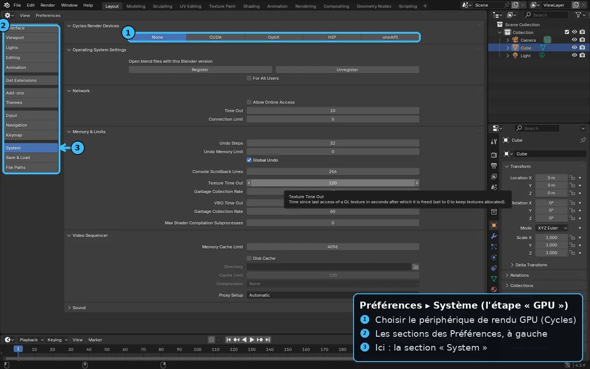

B1 — Installation & configuration de Blender
À la fin de cette leçon, tu sauras :
- Télécharger et installer Blender depuis la source officielle, et choisir entre la LTS (4.5) et la version courante (5.0).
- Comprendre l'installateur vs la version portable, et où vivent tes préférences.
- Régler les Preferences essentielles : GPU de rendu, thème, et système d'unités.
- Activer un add-on intégré et installer un add-on tiers (.zip).
Pourquoi c'est important
Blender est gratuit, open source et complet : c'est l'outil DCC (DCC) qui sert de point de départ à la quasi-totalité de tes assets avant Unity ou Unreal. Mais une installation mal configurée — mauvaise version, GPU non activé pour le rendu, unités farfelues — te fait perdre du temps et provoque des surprises à l'export (échelle, lenteur de rendu). Cette première leçon pose des bases saines pour tout le reste de la piste.
Contrairement à Unity (Hub) ou Unreal (Launcher), Blender s'installe en un seul logiciel autonome : pas de gestionnaire de versions obligatoire, pas de compte. C'est plus simple, mais cela t'oblige à gérer toi-même tes versions.
Théorie en profondeur
1. Où télécharger, et quelle version
Blender est développé par la Blender Foundation, une organisation à but non lucratif néerlandaise, et publié sous licence libre GPL : c'est ce qui garantit qu'il reste gratuit, y compris pour un usage commercial. On télécharge uniquement depuis le site officiel blender.org (les versions trouvées ailleurs peuvent être modifiées). Blender suit deux canaux :
- LTS (Long Term Support) — la dernière est Blender 4.5 LTS (juillet 2025), corrigée jusqu'en juillet 2027. C'est le choix de la stabilité maximale pour un projet sérieux.
- Version courante — Blender 5.0 (sortie en mars 2026) apporte les dernières fonctions ; il n'existe pas encore de LTS 5.x. Très bien aussi pour apprendre, en acceptant des évolutions plus fréquentes.
On affiche toujours le numéro de version pour rester datable : ce cours s'applique aussi bien à Blender 4.5 LTS qu'à 5.0. Les principes sont identiques ; seuls quelques menus bougent d'une version à l'autre. Si tu débutes et hésites : prends la 4.5 LTS pour la tranquillité, ou la 5.0 pour le plus récent.
2. Installateur, portable et préférences
Sur Windows, deux options : l'Installer (.msi) classique, ou la version Portable (.zip) qu'on décompresse où l'on veut (idéale pour faire coexister plusieurs versions sans conflit). Détail crucial : par défaut, Blender range tes préférences et add-ons dans ton dossier utilisateur (et non dans le dossier du programme). Une version portable peut être rendue « vraiment portable » en cochant l'option qui garde la config à côté de l'exécutable — utile sur clé USB.
3. Les Preferences à régler en premier
On ouvre . Les réglages qui comptent dès le départ :
- System ▸ Cycles Render Devices : choisis ton API GPU (CUDA/OptiX pour NVIDIA, HIP pour AMD, Metal pour Mac) et coche ta carte graphique. Sans ça, le moteur de rendu Cycles calcule sur le processeur — beaucoup plus lent (renvoi B7).
- Interface ▸ Display : échelle de l'UI (Resolution Scale) pour le confort sur écran HiDPI.
- Themes : clair/sombre selon ta préférence.
- Save & Load : active Auto Save (sauvegardes temporaires) — il te sauvera la mise un jour.
4. Les unités : à régler tôt pour l'export
Dans , le Unit System est Metric par défaut, avec 1 unité Blender = 1 mètre. Garde ce réglage : il est cohérent avec Unity (1 unité = 1 m) et te facilitera l'export vers les moteurs (renvoi C2 et B11). Modéliser à la bonne échelle dès le départ évite le fameux facteur ×100 dans Unreal.

🖐Essaie maintenant~1 min
Ouvre Blender ▸ Edit ▸ Preferences ▸ System : repère le rendu GPU (CUDA/OptiX/HIP/Metal) et vérifie qu'il pointe ta carte graphique. En 30 secondes, tu t'assures que Cycles calculera sur le GPU.
🔧 Démonstration pas à pas
- Va sur blender.org ▸ . Choisis la version LTS 4.x pour ton OS. Préfère l'Installer si c'est ta seule version, le Portable si tu veux plusieurs versions côte à côte.
- Installe puis lance Blender. Ferme le Splash Screen (clic dans le vide) — la scène de départ contient un cube, une caméra et une lumière.
- Ouvre . Sous Cycles Render Devices, sélectionne ton API GPU et coche ta carte. Ferme (Blender enregistre automatiquement).
- Va dans et vérifie Unit System = Metric. (Pour des objets petits, tu peux passer la Length en centimètres pour l'affichage, sans changer l'échelle interne.)
- Active un add-on intégré : , cherche « Node Wrangler » et coche-le (il accélère énormément le travail de nœuds, renvoi B7).
- Pour un add-on tiers téléchargé en .zip : même fenêtre ▸ bouton ▸ sélectionne le .zip ▸ coche-le dans la liste.
⚠️ Pièges & erreurs courantes
🔧Exercice pratique
- Installe Blender depuis blender.org (la 4.5 LTS pour la stabilité, ou la 5.0 pour le plus récent).
- Active le GPU dans les Preferences et vérifie que le rendu Cycles propose GPU Compute.
- Confirme les unités Metric (1 u = 1 m) et active les add-ons Node Wrangler et LoopTools.
- Sauvegarde un fichier de démarrage personnalisé via .
- Blender (4.5 LTS ou 5.0) est installé depuis la source officielle.
- Le GPU est sélectionné et le rendu peut tourner dessus.
- Tu sais activer un add-on intégré et installer un .zip tiers.
Vérifie ta compréhension
Clique sur la réponse que tu penses correcte : la bonne réponse et une explication s'affichent aussitôt.
Exercices
Installe la dernière version LTS de Blender et lance-la. Repère où changer la langue et le thème si besoin.
Voir une piste
Télécharge depuis blender.org (choisis LTS). Edit ▸ Preferences ▸ Interface pour la langue, ▸ Themes pour l'apparence. Garde les raccourcis par défaut au début pour suivre les tutoriels.
Active l'auto-save, règle son intervalle, et fais un premier enregistrement de fichier (.blend) versionné.
Voir une piste
Preferences ▸ Save & Load ▸ Auto Save (active, règle l'intervalle). Enregistre ton fichier sous un nom clair avec un numéro de version (projet_v01.blend) pour pouvoir revenir en arrière.
Installe un add-on utile (ex. un add-on livré avec Blender) et vérifie qu'il apparaît dans l'interface.
Voir une piste
Preferences ▸ Add-ons ▸ coche un add-on (ex. « Node Wrangler » ou « LoopTools »). Vérifie qu'il ajoute des options dans les menus/panneaux correspondants. Les add-ons étendent énormément Blender.
- Télécharge depuis blender.org : 4.5 LTS (stabilité, support jusqu'à juillet 2027) ou 5.0 (la plus récente, mars 2026).
- Active ton GPU dans les Preferences, sinon le rendu rame.
- Garde les unités Metric (1 u = 1 m) pour un export sain vers les moteurs.
- Les add-ons s'activent (intégrés) ou s'installent (.zip) dans Preferences ▸ Add-ons — et doivent être cochés.
Glossaire des termes introduits
LTS — version de Blender à support long (~2 ans), recommandée pour la production.
Version portable — Blender décompressé d'un .zip, exécutable sans installation, pratique pour plusieurs versions.
Render Device — matériel utilisé pour le rendu (CPU ou GPU) ; activer le GPU accélère fortement Cycles.
Voir aussi le glossaire global.
Pour aller plus loin
- B2 — Interface & navigation : prendre en main l'éditeur.
- L1 — Blender (aperçu) : la vue d'ensemble du rôle de Blender dans le pipeline.
- C2 — Transférer des assets : pourquoi les unités comptent dès l'installation.